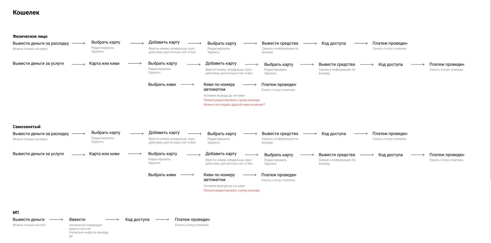
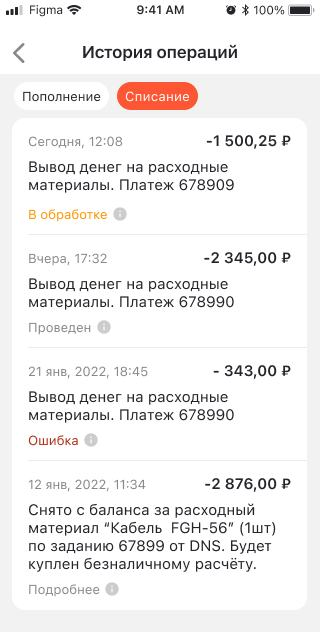
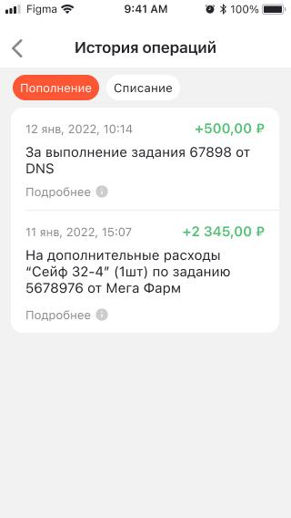
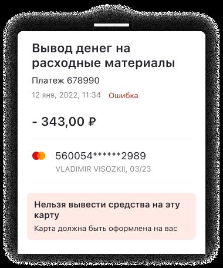
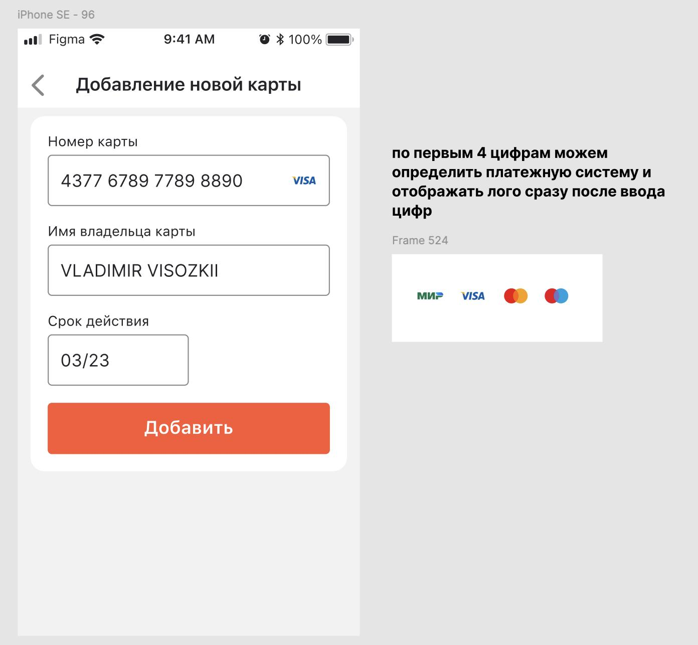
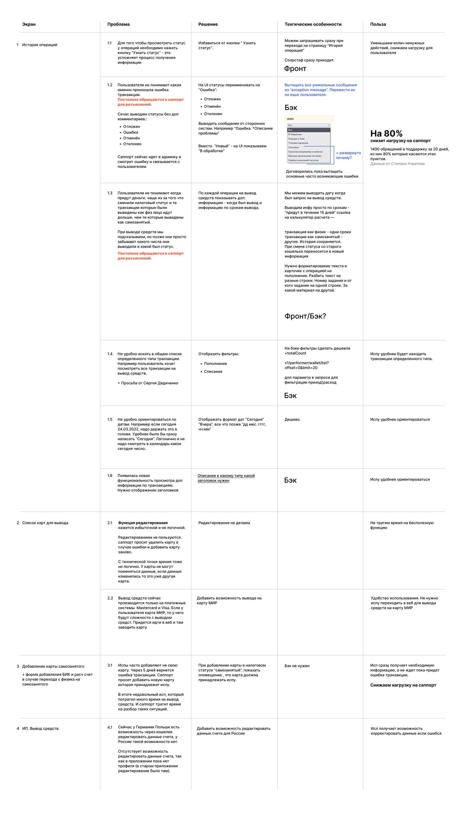
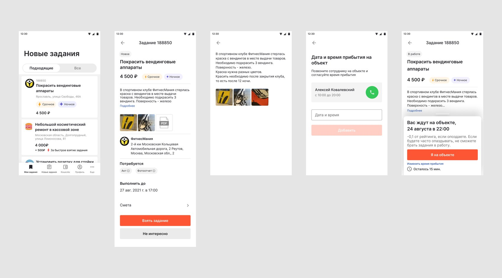

Как я ускорила работу со сметой: один запрос вместо десятков
Краудсорсинговая платформа, которая привлекает частных исполнителей на разовые работы для бизнеса и для частных лиц. Отвечала за UX-исследования, проектирование web/iOS/Android и работу внутри дизайн-системы.

Исследования и продуктовый дизайн
Проводила качественные UX-исследования и работала со статистическими данными, формулировала гипотезы, проектировала интерфейсы для web, iOS и Android, проводила демо для бизнеса и вела документацию: User Stories, Use Cases, тексты интерфейса.
Участвовала в разработке сервисов: поиск и удалённый контроль исполнителей, «Клининг» (услуги по расписанию и сбор отчётности с 2000 объектов по России), хелп-деск, планово-предупредительные работы и мобильные приложения исполнителей.
Редизайн приложения исполнителей
Занималась редизайном мобильного приложения для исполнителей — ключевого канала, через который они находят задания и отправляют отчёты. Запуск обновлённого приложения помог привлечь больше исполнителей на платформу.

Работа в ограничениях системы
Создавала интерфейсы в ограничениях действующей дизайн-системы, поддерживая консистентность продукта в кросс-функциональной команде.

Смета: до и после
Улучшала одну из главных частей системы — смету. Нужно было ускорить работу менеджеров по добавлению услуг и материалов: в среднем смета содержит около 70 позиций.
Было
Услуги и материалы добавлялись по одной штуке. После каждого добавления уходил запрос на сервер, и до появления данных в смете приходилось ждать, прежде чем добавить следующую позицию.
Стало
Можно добавлять и локально редактировать множество позиций сразу, а на сервер уходит один запрос — только при сохранении.


История операций: что снижает нагрузку на саппорт
Отдельно разобрала раздел «История операций» — как исполнители видят статусы платежей и вывод средств. Начала с Mind Map сценариев кошелька для трёх статусов исполнителя: физлицо, самозанятый, ИП — у каждого свои ограничения по картам, вывода и срокам поступления.

Дальше — данные саппорта: 1 400 обращений в поддержку за 20 дней, из них 80% касались именно статусов и сроков выплат (данные Степана Учватова). По каждому пункту расписала проблему, решение и техническую специфику — отдельно для фронта и бэка.
- Лишний клик за статусом. Чтобы узнать статус операции, нужно было отдельно нажимать «Узнать статус» — предложила показывать статус сразу в списке, без лишнего действия.
- Непонятные статусы ошибок. Технический статус вроде «Новый» заменила на понятный человеку — «Ошибка», «В обработке» — и вывожу текст ошибки от сторонних систем на языке пользователя: например, «Нельзя вывести средства на эту карту — карта должна быть оформлена на вас».
- Непредсказуемые сроки выплат. Стала показывать срок поступления по каждой операции и сохранять историю смены статуса — особенно важно при переходе между налоговыми режимами, когда сроки вывода меняются.
- Карта МИР недоступна в приложении. Раньше вывод работал только на Mastercard и Visa — с картой МИР приходилось уходить в веб-версию. Добавила поддержку МИР прямо в приложении.





1 400 обращений в поддержку за 20 дней, из них 80% — по этим статусам и срокам.
Гипотеза, сформулированная на старте, подтвердилась почти в точности.

От выбора задания до чек-ина на объекте
Помимо кошелька и сметы, спроектировала сценарий, через который исполнитель находит работу и подтверждает её выполнение. Лента заданий показывает цену и теги вроде «Срочное» и «Ночное», а бонус за быстрое взятие — отдельным акцентом на карточке.
В карточке задания сразу видно, что потребуется для отчёта — акт и фотоотчёт — и до какого срока нужно выполнить работу. После того как исполнитель берёт задание, он согласует дату и время прибытия прямо в приложении, без звонков менеджеру, и отмечает приход на объект одной кнопкой «Я на объекте».

Деталь, которая снижает трение
Если исполнитель опаздывает на объект, приложение сразу предупреждает: опоздания снижают рейтинг, а низкий рейтинг ограничивает доступ к новым заданиям. Это честно объясняет исполнителю правила игры до того, как он согласится на площадку, а не после.